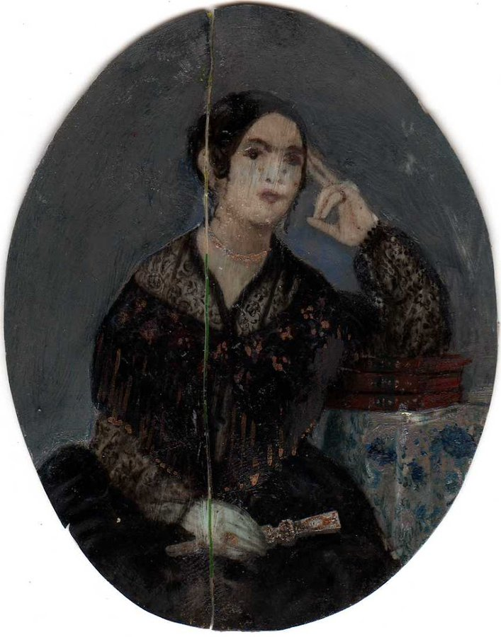

Los Hilos de Monik
Cubanas que hicieron historia antes del siglo XX
Publicado el 6 de marzo de 2021 - 10 tweets - Hilo original en Twitter
1
Preparándonos para el #DiaInternacionalDeLaMujer, hablemos de algunas cubanas que hicieron historia antes del siglo XX.
Hoy quiero traerles a algunas completas desconocidas (o casi) que merecen las recordemos ya sea por su valor o inteligencia.
2
Beatriz de Jústiz y Zayas (1773-1803)
Se le considera la primera escritora cubana. Tras la toma de La Habana por los ingleses, escribió un poema en décimas al rey Carlos III, denunciando al gobernador Juan de Prado Portocarrero por permitir la ocupación de la ciudad.
3
La esclava Carlota
Lideró la revuelta del Ingenio Triunvirato, que se extendió por toda Matanzas. Supuestamente todo comenzó cuando Carlota fue a rescatar a su amante Fermina, castigada en el ingenio Acana. Al final, Carlota es condenada a morir descuartizada por caballos.
4
Baldomera Fuentes (1807 - 1877)
Santiaguera, maestra y pintora. Tras un año de matrimonio interpuso una demanda de divorcio ante el tribunal eclesiástico por adulterio y amenazas de muerte. Logró el divorcio, así como recuperar su dote.
5
Adela Azcuy (1861 - 1914)
Enfermera y poeta de Viñales. Fue la mujer que participó en más combates: 49, alcanzando el rango de Capitana del Ejército Libertador. Al terminar la guerra, quisieron obviarla de los veteranos, algo que Máximo Gómez impidió.
6
Mercedes Sirvén (1872 - 1948)
Santiaguera, maestra y pintora. Tras un año de matrimonio interpuso una demanda de divorcio ante el tribunal eclesiástico por adulterio y amenazas de muerte. Logró el divorcio, así como recuperar su dote.
7
Isabel Rubio (1837 - 1898)
Agente personal de José Martí. Su casa era el centro de conspiración más grande de Pinar del Rio. Creó varios hospitales de campaña, que movía por un área de 150 km. Antonio Maceo la ascendió a Capitana durante la Invasión a Occidente.
8
Edelmira Guerra
Matancera y fundadora del Club “Esperanza del Valle” en Cienfuegos. Se llegó a reunir con Valeriano Weyler para demandarle recursos para los necesitados, que luego envió a los mambises. En 1901, el Club se transforma en la primera Asociación Femenina en Cuba.
9
Serafina Daumy y Martínez
Primera cubana que ejerció la carrera de cirugía dental, una especialidad que no existía en 1879 cuando se matricula en la Universidad de La Habana, pero que perfeccionó en una academia privada. Se graduó en 1882 y abrió consulta en Cienfuegos.
10
Laura Martínez de Carvajal (1869 - 1941)
Primera mujer médico en Cuba, oftalmóloga. Se graduó de la Universidad de La Habana con 19 años en 1889. Como era mujer, no podía diseccionar cuerpos junto a sus compañeros, y debió aprender a hacerlo sola los fines de semana.